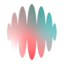
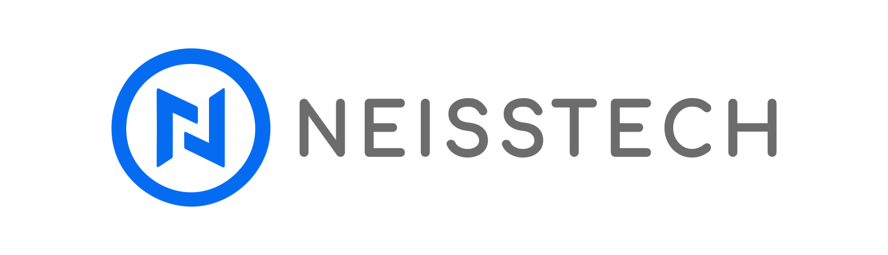
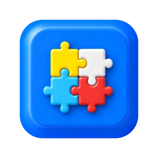
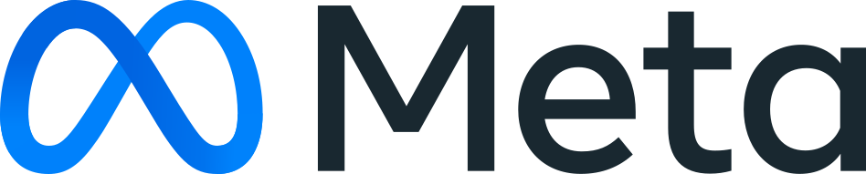
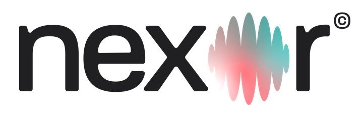
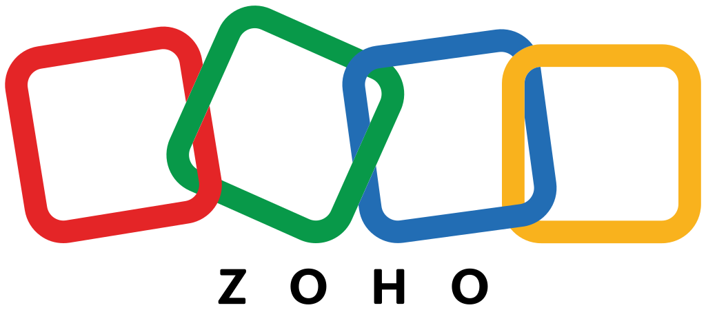
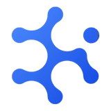
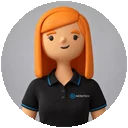

Llama y agenda
Llama en minutos, habla del servicio que pidió, califica el proyecto y agenda con Bastián.

01 · Ecosistema
Cada persona que deja sus datos queda registrada y medida de punta a punta.


Píxel y servidor avisan a Meta de cada formulario.

Landing de Pintura o de Demarcación virtual.

En minutos, hablando del servicio que pidió.

Invitación con Google Meet en su calendario.

El contacto queda en Zoho.
Todo se ve en el CRM de Neisstech, minuto a minutoCada llamada deja su feedback y la transcripción en PDF.
CRM Neisstech

Medula · memoria
Jacinta · Telegram04 · Medición
Jacinta avisa en Telegram, en un tema solo para María, cada llamada: feedback y PDF con la transcripción.